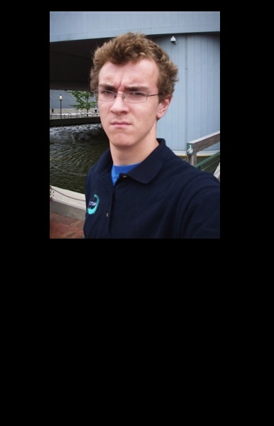

=
= The primary goal of this assignment is to seamlessly blend an object or texture from a source image into a target image. The simplest method would be to just copy and paste the pixels from one image directly into the other. Unfortunately, this will create very noticeable seams, even if the backgrounds are similar. In this project, the Laplacian pyramid blending and Poisson blending will be implemented to solve this problem.
The implementation of Laplacian pyramid blending method is quite simple, We first create three pyramid of the input image, gaussian and laplacian. After we got the image pyramid and laplace pyramid of foreground and background. We can combine the laplacian pyramids using this formula:
laplaceMerge{i} = gaussianMask{i}.*laplaceFore{i} + (1-gaussianMask{i}).*laplaceBack{i};
Start from the smallest scale of the image, for each level of laplaceMerge pyramid, we progressively upsample the smallest scale image and combine with every level of laplaceMerge pyramid. Finally, the accumulated image will be the result.
This blending method is extremely fast. Elapsed time is just about 0.1 seconds. One of the advantage of Laplacian Pyramid is that it preserves the color of the source image. Another property of Laplacian Pyramid method is that it depends on the size of the Gaussian filter. If the size of the filter is too small, a clear boundary will be between the source and the target image.
Poisson Blending
For the every output pixels outside the mask, we make them equal to the according pixels of target image. For the pixels which inside the mask, we calculate the gradients of each pixel for foreground and background by this formulas:
% r = row of the image matrix, c = column of the image matrix, ch = channel of rgb image
Laplacian = 4 * Img(r, c, ch) - Img(r+1, c, ch) - Img(r-1, c, ch) - Img(r, c+1, ch) - Img(r, c-1, ch);
Subtract the foreground and background Laplacian, we can get matrix B of each rgb channel.
The we solve the three channel of system of linear equations Ax = B.
This implementation is very slow. Elapsed time is over 1 min, because I loop for every single pixel and excessively access matrix. Maybe I can spend more time on improving the algorithm or implement the skeleton code.
Extra Credit
Failure cases
For the testcase of notebook, the horizontal lines was disappeared. Since I didn’t implement using mixed gradients for the forground image. Mixed gradient should work great for transparent foreground image like the text on the notebook.
apple_out_pyramid
+ =
notebook_out_poisson
+ =
snow_out_poisson
+=
mona_out_poisson
 +  =
=
Reference
http://en.wikipedia.org/wiki/Discrete_Poisson_equation